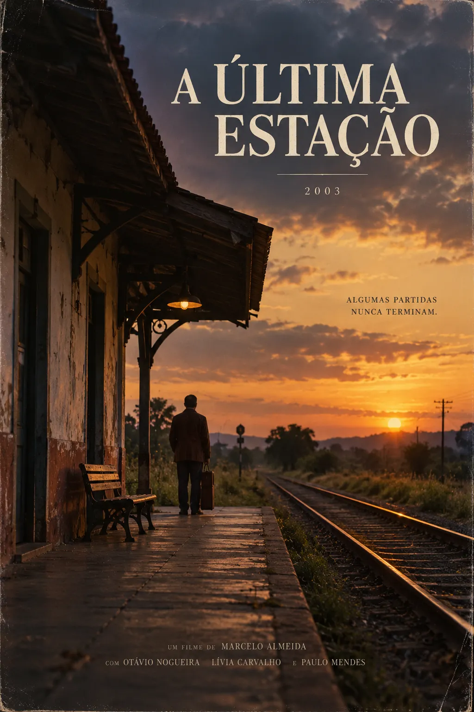
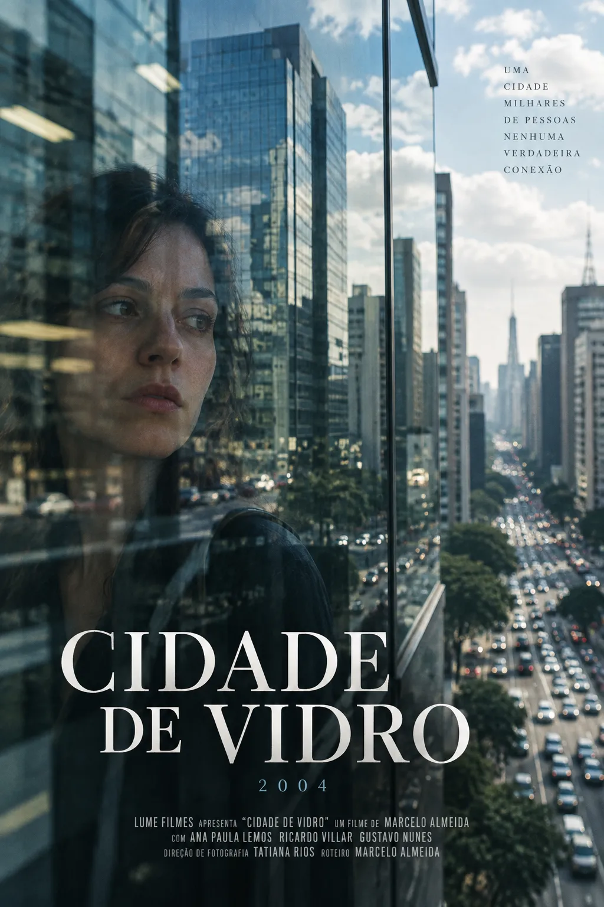
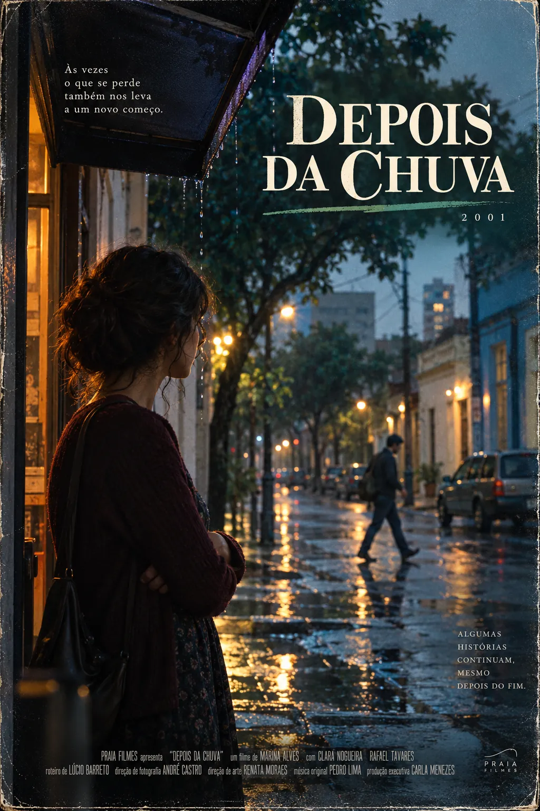
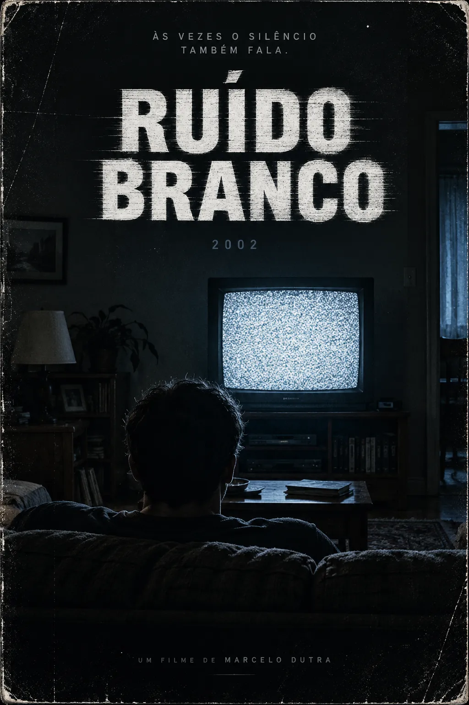
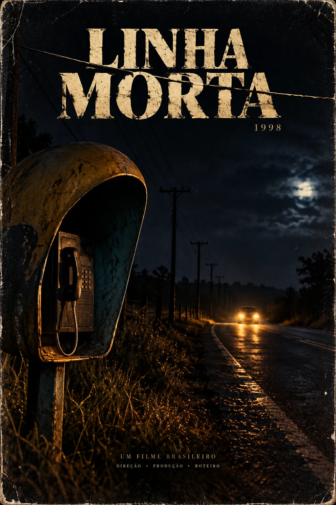
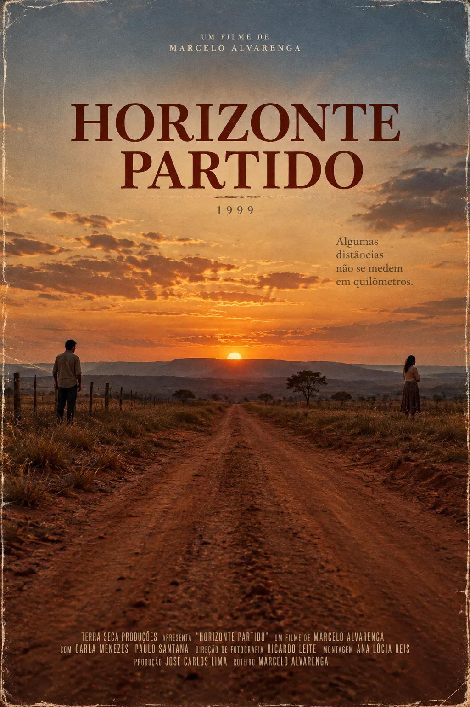
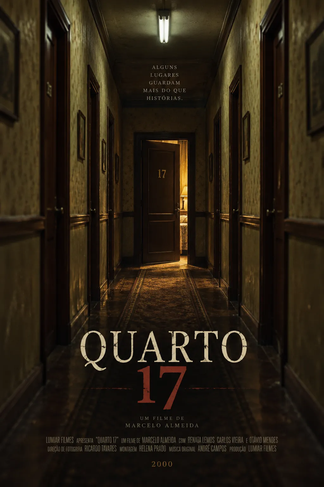
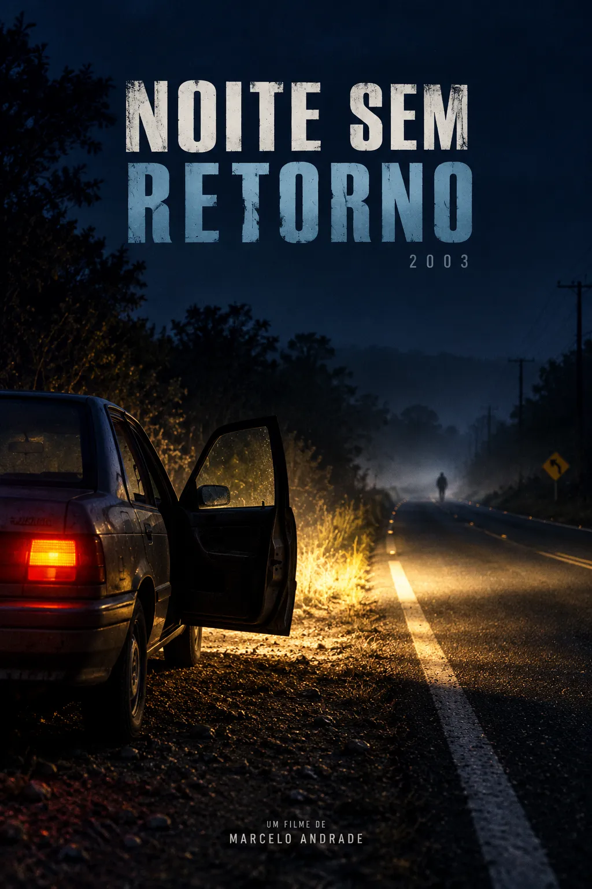

A Última Estação2003 • Brasil★★★★☆FILMES EM DESTAQUE
CONFIRA NO ACERVO | DVD • VHS • CINEMA

Cidade de Vidro2004 • Brasil★★★★☆
Depois da Chuva2001 • Brasil★★★★☆
Ruído Branco2002 • Brasil★★★★☆
Linha Morta1998 • Brasil★★★★☆
Horizonte Partido1999 • Brasil★★★★☆
Quarto 172000 • Brasil★★★★☆
Noite sem Retorno2003 • Brasil★★★★☆PUBLICIDADEESTANTE SETE CDs & DVDsSUA COLEÇÃO MERECE MAIS! • OFERTAS DE SETEMBRO
ÚLTIMAS CRÍTICAS
Cidade de Vidro
★★★★☆
A cidade vista de dentro: um filme que encontra delicadeza no cotidiano de seus habitantes.
Por Helena DuarteRuído Branco
★★★☆☆
O silêncio de uma rádio do interior rende mais tensão que os diálogos. Uma boa surpresa em DVD.
Por Paulo MendonçaDepois da Chuva
Sem pressa de chegar, a narrativa acompanha os pequenos recomeços de uma família.
Por Helena DuarteNOTÍCIAS
Mostra dedica fim de semana ao curta nacional
Sessões de tarde e conversas com realizadores integram a programação do Cine Aurora.
As salas de rua ainda têm histórias para contar
Fotografias e programas antigos reunidos em uma exposição sobre a memória do cinema.
Novas cópias, velhos favoritos
Distribuidoras independentes preparam uma seleção de títulos nacionais para o fim do ano.
CINEMA BRASILEIRO
Fora do circuito, dentro do acervo. Títulos nacionais e descobertas das pequenas mostras.